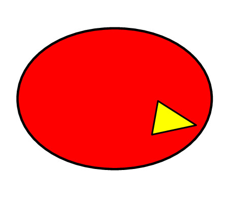

and the program should behave exactly like the lunar descent game from the previous exercise.
and the program should behave exactly like the lunar descent game from the previous exercise.
If you have finished tinkering with the Lunar descent lab you can continue with this lab where we will configure the game to shoot a bird-shaped projectile. We call this game Bellicose Birds.
From a physics perspective, bellicose birds is essentially the same as lunar descent except that there is no rocket thrust. The kinematic equations look like this: $$\sum F_{\rm{net},x} = 0 = m \, a_x$$ $$\sum F_{\rm{net},y} = m g = m \, a_y$$ $$ \Delta v_x = a_x \Delta t$$ $$ \Delta v_y = a_y \Delta t$$ $$ v_x = v_{x0} + \Delta v_x$$ $$ v_y = v_{y0} + \Delta v_y$$ $$ x = x_0 + v_x \cdot \Delta t $$ $$ y = y_0 + v_y \cdot \Delta t $$
The computer program we will work with here computes these equations over and over again, updating $v_x$, $v_y$, $x$ and $y$ depending on whether the thrust is turned on or off. If the thrust is turned off then $a_x = 0$ and $\Delta v_x = 0$ and the ship just continues with the same $v_x$ velocity. With the thrust off the $v_y$ velocity will continue to change with time due to gravity, $\Delta v_y = -g \, \Delta t$.
Create a folder on your local computer called bellicosebirds. Download to this folder the files lunardescent.pde, functions.pde
If you can, change the name of lunardescent.pde to bellicosebirds.pde If this doesn't work, you can download the lunardescent code with the filename changed with this link: bellicosebirds.pde
In the bellicosebirds folder double click on the bellicosebirds file and the Processing Development Environment should open up.
Press and the program should behave exactly like the lunar descent game from the previous exercise.
Instead of starting the ship's position in the middle of the screen you'll want to configure it to start at the bottom left. Edit bellicosebirds.pde and change the setup() function from this:
void setup() {
size(750,500);
x = width/2;
y = height/2;
}
to this:
void setup() {
size(750,500);
x = 0.2*width;
y = 0.95*height;
}
The ship should now start at the bottom of the screen. Check to see that this works.
The easiest way to do this is to set g = 0 near the beginning of bellicosebirds.pde where the variables are all initialized. Then set g = 9.8 inside of the if statement for the spacebar.
Finally, in order to prevent the rocket from sticking to the ground, remove this statement:
if ( abs(y - 0.95*height) < 0.1) {
deltaVx = 0;
deltaVy = 0;
vx = 0;
vy = 0;
theta = PI/2;
}
Once you do this the game should behave like this.
Add a variable for the initial velocity near the beginning of bellicosebirds.pde
float vinit = 65;
Then add two lines after g = 9.8 to set the initial velocity:
} else if (key == ' ') { // spacebar is pressed
g = 9.8;
vx = ?????;
vy = ?????;
}
It is up to you to figure out what goes in the question marks (think: trigonometry). When finished the game should behave like this
Note: For a more authentic bellicose birds experience you can turn off the thrusters by setting Fthrust = 0.0; at the top of the page.
You should be able to calculate the trajectory of the rocket from the kinematics equations we used towards the beginning of the course. In this step you will calculate this trajectory and draw it on the screen using point(xdraw,ydraw); You may recognize this as the same function we used to do the projectile in the planetoids lab.
Just after line(0,height,width,height); in bellicosebirds.pde add these variables which are the initial x and y position of the rocket:
float x0 = 0.2*width; float y0 = 0.95*height;
Immediately after this write:
int Npoints=1000;
for(int i=1;i<=Npoints;i+=1)
{
float t = (i-1)*dt;
float xdraw = x0 + ?????;
float ydraw = y0 + ?????;
point(xdraw,ydraw);
}
Fill in the ???? with the terms that give the right trajectory. These will of course depend on t the time variable. Note that to square a variable in this context simply multiply it by itself (for example: t*t). Expressions like t^2 won't work in this case (or in any other C/C++ context).
Important Note: Although gravity is usually pointing in the -y direction, in this case it points in the +y direction. This means that there should be a + sign in front of the acceleration term instead of a - sign like usual.
Once you have figured this out the program should behave like this
Add these lines after the "Game Over" in bellicosebirds.pde but before the noLoop()
text(x,width/2,height/2 + 20); text(theta,width/2,height/2 + 40);
This will show two pieces of information when the rocket falls below the page. The first line tells you the x value where the rocket landed. The second line gives the angle in radians.
Convert the angle from radians to degrees!
Then check to see that 45 degrees gives the farthest distance. (Helpful hint: change the line where the angle of the ship changes so that it doesn't rotate so much every time you press the arrow.)
When finished, the game should behave like this
Chose one or both of these two options: (1) Replacing the ship with an bellicose bird, or (2) configure the game so that pressing the spacebar only works the first time.
Note that Option 1 is easier because there is a step-by-step guide.
Make the lab more fun by replacing the rocket with an bellicose bird.

Change your setup() command again so that it loads the image of a bird:
PImage img; //Add this before setup()
void setup() {
size(750,500);
x = 0.2*width;
y = 0.95*height;
img = loadImage("http://www.physics.ohio-state.edu/~orban/processing_2015/rougebird.jpg");
}
Then right after your display() command in bellicosebirds.pde add this line:
image(img,x-12,y-12,25,25);
The problem is that the bird is drawn on top of the ship. We can fix this by making the size of the ship zero. Edit this line in functions.pde
//Size of the ship float r = 12;
Change the variable r from 12 to 0 and the ship will disappear.
Once you have made these changes, the game should behave like this
You may notice that the rocket/bird only follows the trajectory if you tap the spacebar as briefly as you can. Configure the game so that pressing the spacebar only works the first time.
Once you have made this change, the game should behave like this
If you want to share your program with a friend, send them three files: Your bellicosebirds.pde, a copy of functions.pde and right-click and download the file bellicosebirds.html. As long as these three files are in the same folder on your or someone else's computer you should be able to double click on bellicosebirds.html and play the game on a web browser. You don't need to install the processing interactive environment to get this to work.
If this seems overly complicated the other way you can share your program is by clicking "Create sketch" at openprocessing.org. Upload your code, set up an account (for free!) and then give your friends a link to the sketch.